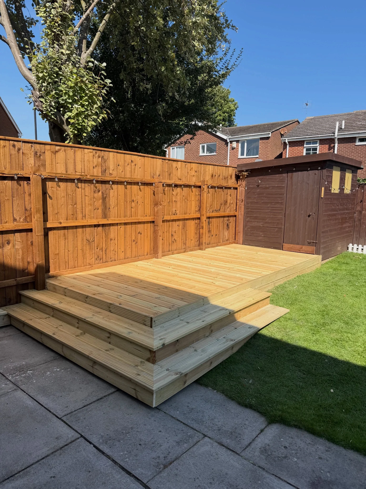
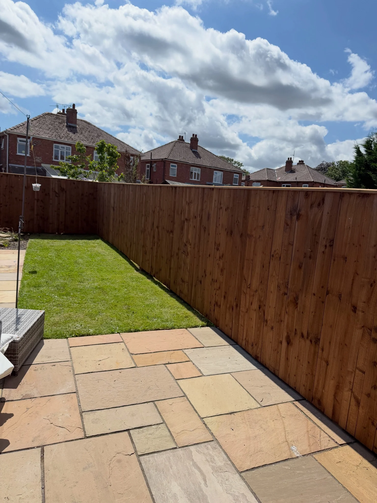
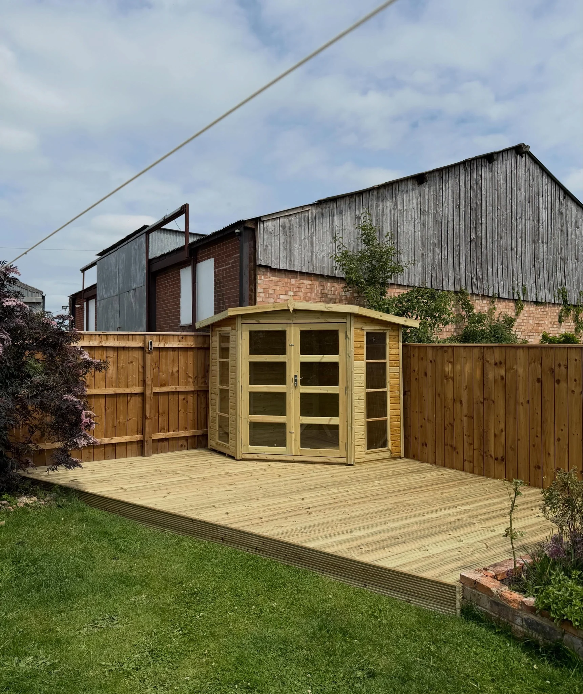
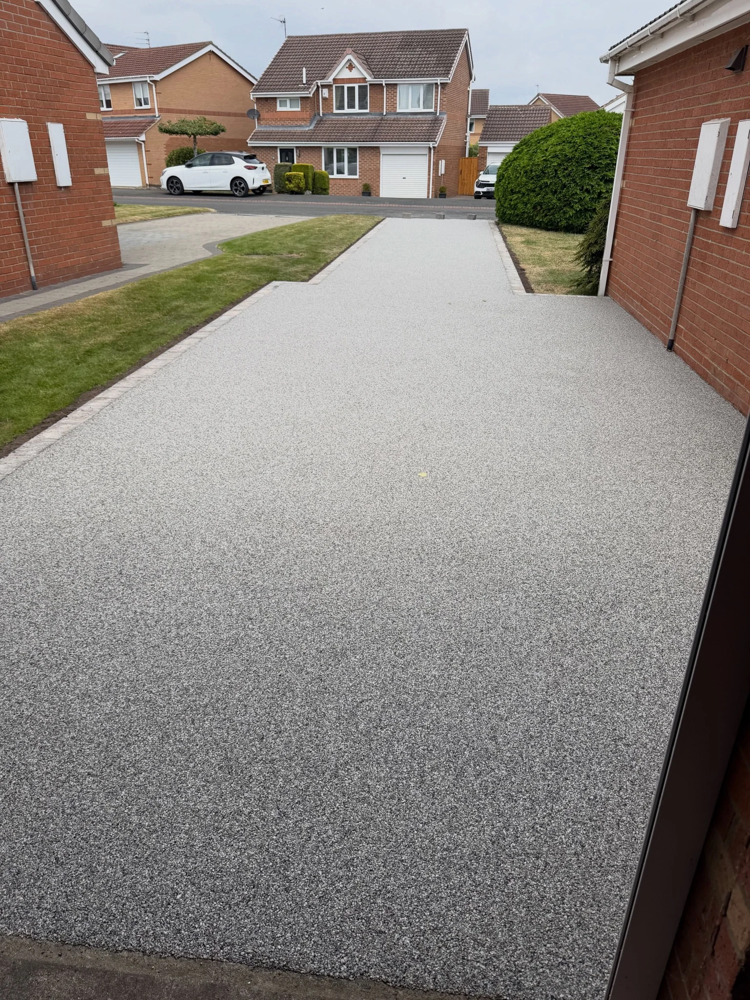
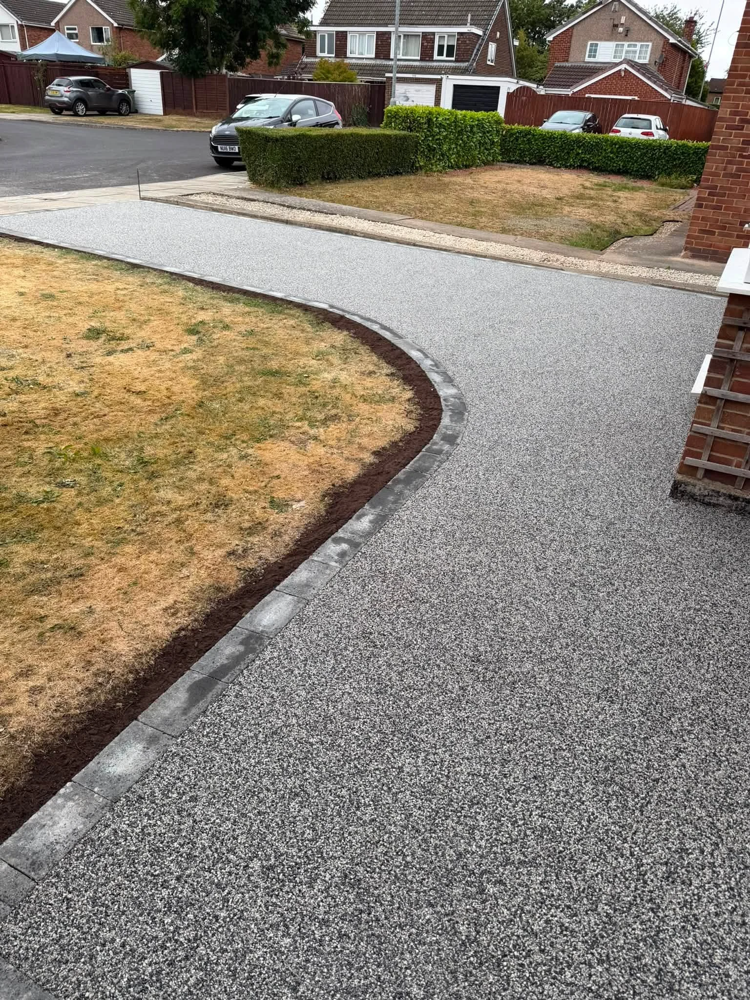

DeckingPlatforms, steps and balustrades

FencingBoundaries and garden privacy
Resin SurfacingDriveways and outdoor surfaces
LandscapingPatios and joined-up garden spaces
Bespoke ProjectsSummerhouses and outdoor features
OUTDOOR SPACES
One garden.
More possibilities.
A place to sit, a boundary that gives privacy, a surface that ties it all together. ABL specialises in decking, resin, fencing and landscaping.
Explore the project photos and talk through the layout, finish and practical details you have in mind.
Tell us your ideas →

RESIN SURFACING
A smooth arrival.
Resin surfacing gives paths, courtyards and driveways a consistent finish. The portfolio shows grey surfaces, contrasting borders and carefully defined edges around lawns.
Explore resin →

RECENT PROJECTS
See the finish.
Decking, fencing, resin and garden projects from ABL. Tap a photo to view the complete image.
BEYOND THE EVERYDAY
Room for ideas.
An outdoor kitchen, practical worktops and a paved floor: this project shows another way to make a garden more useful.
Have a particular outdoor feature in mind? Send a sketch or some photos and discuss what is possible.
Explore bespoke projects →ABL DECKING FENCING RESIN LTD
More from outdoors.
ABL brings together decking, fencing, resin surfacing and landscaping. The project portfolio includes home gardens, lodge decking, summerhouses and driveways.
01
Connected spaces
Discuss how decks, paths, patios and boundaries will work together.
02
Thoughtful details
Steps, balustrades, borders and levels all shape the finished space.
03
Your next project
Share the location, measurements and photos to start a conversation.
REQUEST A QUOTE
What’s your idea?
Choose a service and describe the work. The form opens WhatsApp with your details ready to send. You can add photos there.
Your enquiry is only sent when you send the WhatsApp message. Privacy information.
GOOD TO KNOW
A few answers.
What services does ABL offer?
ABL specialises in decking, resin surfacing, fencing and landscaping. The supplied portfolio also includes a summerhouse and outdoor kitchen.
Do you work on holiday lodges?
The portfolio includes lodge decking with a surrounding balustrade. Send photos, measurements and the location to discuss your project.
Can I discuss a resin driveway?
Yes. Include the approximate area, existing surface, access and any preferred edging or colours in your enquiry.
What should I send for a quote?
Your postcode, the service you need, approximate measurements and a description of the work. Photos help explain the existing space.
Which areas do you cover?
Contact ABL with your postcode to confirm coverage and availability for your project.
Can I discuss a bespoke outdoor feature?
Share a description, sketch or example photos. ABL can discuss the proposed work and confirm what can be offered.
ABL DECKING FENCING RESIN LTD
Let’s build it.
Decking · Fencing · Resin · Landscaping